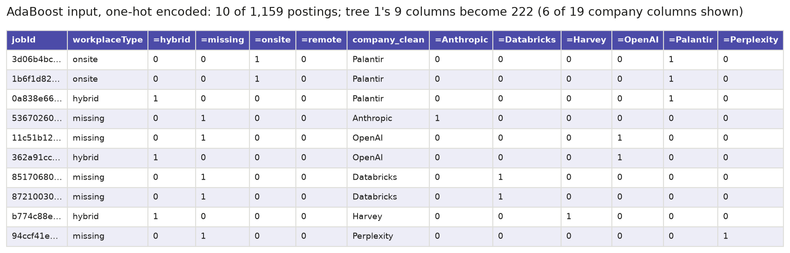
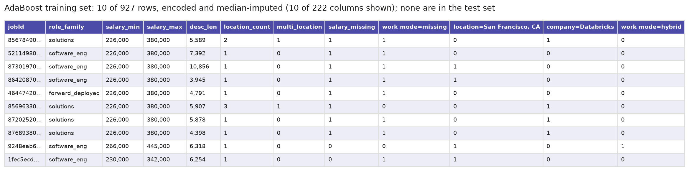
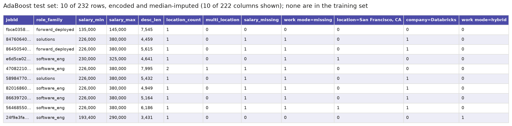
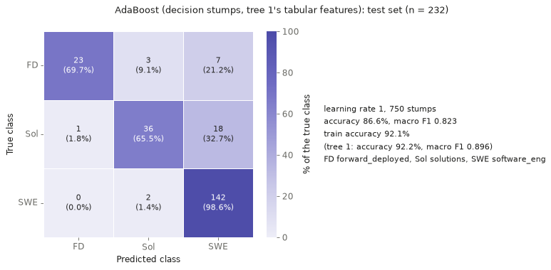
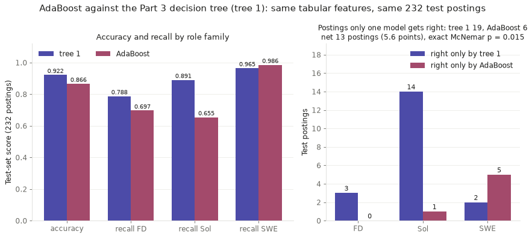

AdaBoost
Overview
AdaBoost, short for adaptive boosting, is a supervised method that combines many weak models into one strong one. It belongs to the family of ensemble methods, which combine the predictions of many models instead of relying on one. There are two main ways to build an ensemble of trees (first figure below). In bagging, which random forests use, each tree is trained on its own random resample of the training data, independently of the others, so all the trees could be trained at the same time, and the final prediction is a majority vote in which every tree counts once. In boosting, the models are built one after another, and each new model concentrates on the examples that the earlier ones got wrong. The order matters, because each model depends on the results of the one before. Bagging mainly steadies deep trees whose answers change a lot from one sample to the next, while boosting mainly strengthens very simple models that on their own miss too much. AdaBoost is used for tasks such as detecting faces in images, flagging fraudulent transactions and scoring customers, and it led to the gradient boosting methods on the later pages of this site.
AdaBoost usually boosts decision stumps. A stump is a decision tree with a single question, a root and two leaves, such as “Is the department Forward Deployed Engineering?”. On its own a stump is a weak model, only a little better than guessing, but hundreds of stumps, each concentrating on a different part of the data, can add up to a strong one. Because each stump asks about one feature, the combined model is still possible to inspect: the features its stumps ask about most are the ones it relies on.
Every training row starts with the same weight. In each round, AdaBoost fits a stump to the weighted rows, choosing the question with the lowest weighted error ε, the total weight of the rows the stump gets wrong. It then raises the weight of the rows the stump got wrong, lowers the weight of the rows it got right, and rescales the weights so that they add up to 1. The next stump is fitted to these new weights, so it pays most attention to the rows that earlier stumps found hard.
Each stump also gets a weight of its own, its say in the final vote, written α (alpha). In the classic two-class version, α = ½ ln((1 − ε) / ε). A stump that is right on most of the weighted rows has a small error and a large α, while a stump that does no better than a coin toss, with ε = 0.5, gets α = 0 and no say at all. The same α sets how much the row weights change: the weight of a row the stump got wrong is multiplied by exp(α), and the weight of a row it got right by exp(−α). The scikit-learn version used here, called SAMME, works the same way for more than two classes. It uses α = ln((1 − ε) / ε) + ln(K − 1), where K is the number of classes, so a stump only has to beat random guessing among the three role families, and it multiplies only the weights of the wrong rows, by exp(α), before rescaling, which has the same effect. A learning rate shrinks every α by the same factor. With a smaller learning rate each stump counts for less, so more rounds are needed, but the result is often more stable.
To label a new example, every stump votes for the class it predicts, with a vote worth its α, and the class with the largest total wins. With two classes this is the sign of α1·h1 + α2·h2 + …, where each stump’s vote h is +1 or −1.
A small example shows how this works (second figure below). Ten made-up points lie on a line at x = 0 to 9, with classes + + + − − − + + + −. No single cut point separates the two classes. Every point starts with a weight of 0.1.
| Round | Stump | Wrong on | Weighted error ε | α = ½ ln((1 − ε) / ε) |
|---|---|---|---|---|
| 1 | x < 2.5 → +, otherwise − | x = 6, 7, 8 | 3 × 1/10 = 0.300 | ½ ln((7/10) / (3/10)) = 0.424 |
| 2 | x < 8.5 → +, otherwise − | x = 3, 4, 5 | 3 × 1/14 = 0.214 | ½ ln((11/14) / (3/14)) = 0.650 |
| 3 | x < 5.5 → −, otherwise + | x = 0, 1, 2, 9 | 4 × 1/22 = 0.182 | ½ ln((18/22) / (4/22)) = 0.752 |
After round 1, the three points that stump 1 got wrong, x = 6, 7 and 8, weigh 1/6 each and the seven it got right 1/14, so stump 2 is chosen to get those three right. The final vote, 0.424·h1 + 0.650·h2 + 0.752·h3, gives +0.32 for x = 0 to 2, −0.53 for x = 3 to 5, +0.98 for x = 6 to 8 and −0.32 for x = 9. That puts all ten points in the right class, although each stump on its own gets three or four of them wrong.
This project uses AdaBoost on the same task as the Decision Trees page: sorting job postings into the three role families, forward deployed engineering, solutions roles and software engineering, from the same facts about each posting that tree 1 used. This makes the comparison like for like, a single deep tree against hundreds of stumps built on the same features. A second, smaller comparison runs AdaBoost on the masked description text, against tree 4 and the Naive Bayes models.
![Two-lane diagram. Top lane, bagging: a box of ten training points with arrows to three resamples drawn with replacement, each with some points enlarged and some left out, leading to three trees and a majority vote. Bottom lane, boosting: three boxes of the same ten points with each point's weight shown as dot size, each above a stump labelled with its alpha, 0.42, 0.65 and 0.75, with red arrows marking that each stump's mistakes weigh more for the next one, and all three stumps feeding a weighted vote.](figures/ab_concept_1.png)
![Four panels. Three panels show the ten points on a line, coloured by class, with dot size for weight, a dashed line at the stump's split at x = 2.5, 8.5 and 5.5, the wrong points ringed, and the weighted error and alpha worked out below in fractions, as in the table above: ε = 3 × 1/10 = 0.300 and α = ½ ln((7/10) / (3/10)) = 0.424, ε = 3 × 1/14 = 0.214 and α = ½ ln((11/14) / (3/14)) = 0.650, and ε = 4 × 1/22 = 0.182 and α = ½ ln((18/22) / (4/22)) = 0.752. In rounds 2 and 3, the last round's mistakes rise from 1/10 and from 1/14 to 1/6 each. The fourth panel shows each stump's vote for every point, the weighted sums of +0.32, −0.53, +0.98 and −0.32 for the four groups of points, and a final row with all ten points correct.](figures/ab_concept_2.png)
Data Preparation
AdaBoost is supervised, so like the decision trees it can only learn from labelled data. Every posting needs its role family attached, because each stump learns which answer to its question goes with which role, and a posting without a label gives it nothing to learn from and nothing to check against. The labels and the 1,159 postings are the same as on the Decision Trees page: 721 software_eng, 275 solutions and 163 forward_deployed. The job title, the seniority level and the flag for repeated copies are never used as features, because the label is read from the title.
AdaBoost also uses the same split, so its results can be compared with tree 1 posting by posting. The postings were divided at random into a training set of 927 (80%) and a test set of 232 (20%), stratified so that each role family has the same share in both. The two sets are disjoint, meaning no posting is in both, and this was checked by job ID. The stumps, the number of rounds and the learning rate are all chosen using the training set only, and the test set is used once, at the end, to measure how well the model labels postings it has never seen. If test postings were also in the training set, the model would be graded on examples it had already seen, and its accuracy would look better than it really is.
AdaBoost in scikit-learn, like the decision trees it is built from, only accepts numbers. The features are the nine used by tree 1: four categories, which are the department, the company, the location and the working arrangement, and five numbers, which are the bottom and top of the yearly salary range, the length of the description in characters, the number of locations listed and whether more than one location is listed. The four category columns were one-hot encoded: each category becomes its own column, which is 1 for postings in that category and 0 for all others (first table below). The working arrangement, for example, becomes four columns, for hybrid, onsite, remote and missing, and each posting has a 1 in exactly one of them. A missing category was given its own value, “missing”, before encoding. A missing number was filled with the median of the training set, and an extra 0/1 column marks postings with no salary. The salary is the one from the job board’s salary field, as for tree 1, not the pay ranges read from the description text on the Regression page, so that the two models see exactly the same data. After encoding, the nine columns become 222. The encoder and the medians were learned from the training set alone and applied unchanged to the test set, and a category that appears only in test postings becomes a row of zeros.

One-hot encoding: ten of the 1,159 postings, with the working arrangement and the company beside the 0/1 columns they become. Each posting has a 1 in the column for its own category and 0 in the others. All four working-arrangement columns are shown, but only 6 of the 19 company columns, the ones these ten postings use. Job IDs are shortened in this image, and the linked file has them in full.

Training set: ten of the 927 training postings as the stumps receive them, after encoding and filling in missing values. The table shows the five number columns, the 0/1 column for a missing salary and 4 of the 216 one-hot columns, the four that are 1 for the most training postings. Eight of these ten postings have no salary, so their salary columns hold the training medians, $226,000 and $380,000.

Test set: ten of the 232 test postings, encoded with the categories and medians learned from the training set. None of their job IDs is in the training set, and their labels are only used to score the predictions.
Data files
- Raw data: job postings collected from company job boards with the Apify multi-ATS job scraper, using fetch_apify.py. The full raw files are about 64 MB and are not stored in the repository, so a 20-row raw sample is linked instead.
- Clean data: ats_final.csv, the 4,294 cleaned postings this page starts from, before repeated copies are removed and the three role families are selected.
- One-hot encoding sample (before and after): ab_input_sample.csv, shown in the first table above.
- Training set sample: ab_train_sample.csv, shown in the second table above.
- Test set sample: ab_test_sample.csv, shown in the third table above.
Code
| File | What it does | Language | Main packages |
|---|---|---|---|
| role_adaboost.py | Tunes the number of rounds and the learning rate together by cross-validation, recording the accuracy after every round, fits the selected AdaBoost models on the tabular features and the masked text, compares them with tree 1, tree 4 and the Naive Bayes models posting by posting, draws the result charts and writes a results report and the cross-validation curves. | Python 3.12 | scikit-learn, pandas, numpy, scipy, matplotlib |
| role_dt.py | Supplies tree 1’s features and its encoding and missing-value pipeline, so that AdaBoost sees exactly the same data, and refits tree 1 and tree 4 from the Decision Trees page for the comparison. | Python 3.12 | scikit-learn, pandas, numpy, matplotlib, seaborn |
| make_module4_samples.py | Saves the small samples of the regression and AdaBoost data shown on these pages, and draws them as table images. | Python 3.12 | pandas, numpy, scikit-learn |
| make_module4_concept_figures.py | Draws the explanatory figures in the Overview from small made-up data. | Python 3.12 | matplotlib, numpy, scipy |
| 04_regression_adaboost.ipynb | Runs the regression steps and then the AdaBoost steps from start to end, prints every result and saves the result figures. It loads the saved cross-validation curves instead of repeating the tuning, which takes about four and a half minutes and sits in its own cell that only runs when switched on. | Python 3.12 (Jupyter) | pandas, numpy, scikit-learn |
Results
AdaBoost was tuned on the training postings only. Its two settings, the number of rounds (n_estimators) and the learning rate, depend on each other, so they were tuned together by 5-fold cross-validation over every pair of learning rate 0.05, 0.1, 0.25, 0.5, 1 and 1.5 with 10, 25, 50, 100, 200, 300, 500, 750, 1,000 and 1,500 rounds. The training postings were split into five parts, and each part was held out in turn while AdaBoost learned from the other four. Each fold’s model was grown once to 1,500 rounds and scored after every round, which gives the validation accuracy at every number of rounds (figure 1). The best pair was learning rate 1 with 750 rounds, with a cross-validated accuracy of 0.894; when two pairs scored the same, the one with fewer rounds would have been kept. That model was then fitted on all 927 training postings and scored once on the 232 test postings. As on the earlier pages, always guessing software_eng would be right for 62.1% of test postings, so that is the level any model has to beat. The numbers below refer to the figures further down the page.
Tuning the rounds and the learning rate
The table gives the cross-validated accuracy for every pair in the grid, with the number of rounds down the side and the learning rate across the top.
| Rounds | rate 0.05 | rate 0.1 | rate 0.25 | rate 0.5 | rate 1 | rate 1.5 |
|---|---|---|---|---|---|---|
| 10 | 0.6376 | 0.6797 | 0.6839 | 0.7227 | 0.7508 | 0.8091 |
| 25 | 0.6602 | 0.7033 | 0.7324 | 0.7616 | 0.7961 | 0.8619 |
| 50 | 0.6839 | 0.7120 | 0.7551 | 0.8037 | 0.8457 | 0.8727 |
| 100 | 0.7033 | 0.7497 | 0.7821 | 0.8285 | 0.8587 | 0.8802 |
| 200 | 0.7497 | 0.7562 | 0.8091 | 0.8479 | 0.8781 | 0.8856 |
| 300 | 0.7508 | 0.7821 | 0.8328 | 0.8630 | 0.8888 | 0.8835 |
| 500 | 0.7605 | 0.7918 | 0.8403 | 0.8802 | 0.8921 | 0.8748 |
| 750 | 0.7821 | 0.8263 | 0.8576 | 0.8835 | 0.8942 | 0.8640 |
| 1,000 | 0.7875 | 0.8371 | 0.8759 | 0.8878 | 0.8888 | 0.8575 |
| 1,500 | 0.8242 | 0.8425 | 0.8781 | 0.8910 | 0.8780 | 0.8543 |
The two settings trade off against each other (figure 1). With a small learning rate each stump counts for little, so many rounds are needed: at 0.05 the cross-validated accuracy is still only 0.824 after 1,500 rounds. A large learning rate learns quickly but overshoots. At 1.5 the accuracy peaks at 0.892 after 152 rounds and then falls to 0.854 by 1,500 rounds, as later stumps fit the training postings too closely. Learning rate 1 peaks at 0.899 after 770 rounds, first comes within half a point of that after 322 rounds, and is down to 0.878 by 1,500 rounds. Even after 750 rounds, AdaBoost gets only 91.7% of its own training postings right within cross-validation, averaged over the five folds, against 100% for tree 1, which grows until every training posting is classified correctly. Each stump asks a single question, so the combined model cannot simply memorise the training postings.
Accuracy and confusion matrix
On the test set, AdaBoost labels 86.6% of postings correctly, with a macro F1 of 0.823 (figure 2). It almost never misses a software engineering posting, finding 142 of the 144, but it finds only 36 of the 55 solutions postings and 23 of the 33 forward_deployed ones, and most of its misses on those two classes go to software_eng: 18 solutions postings and 7 forward_deployed ones. Fitted on all 927 training postings, its training accuracy is 92.1%, slightly above the 91.7% inside cross-validation, where each fold trains on four-fifths of them. The gap between training and test accuracy is 5.5 points, smaller than tree 1’s 7.8. Like tree 1, it relies mostly on department, which makes up 77.8% of its feature importance, far ahead of company (9.2%) and location (7.6%). Only 61 of the 222 encoded columns are used by any of the 750 stumps.
AdaBoost against tree 1
| Model | Test accuracy | Macro F1 | Recall FD | Recall Sol | Recall SWE | Train accuracy | Gap |
|---|---|---|---|---|---|---|---|
| AdaBoost | 0.8664 | 0.8234 | 0.6970 | 0.6545 | 0.9861 | 0.9213 | 0.0549 |
| tree 1 | 0.9224 | 0.8955 | 0.7879 | 0.8909 | 0.9653 | 1.0000 | 0.0776 |
Tree 1 did best. It labels 92.2% of the test postings correctly against 86.6% for AdaBoost, and its macro F1 is 0.896 against 0.823 (figure 3). The two models disagree on 25 of the 232 test postings: tree 1 gets 19 of them right and AdaBoost 6. That is a net 13 postings, or 5.6 points of accuracy, where one posting is worth 0.43 points, and an exact McNemar test, which looks only at the postings the two models disagree on, makes a split this uneven unlikely by chance (p = 0.015).
| Role family | Right only by AdaBoost | Right only by tree 1 |
|---|---|---|
| forward_deployed (FD) | 0 | 3 |
| solutions (Sol) | 1 | 14 |
| software_eng (SWE) | 5 | 2 |
| all | 6 | 19 |
The advantage is concentrated in one class. Of tree 1’s 19 extra correct postings, 14 are solutions postings, while AdaBoost does slightly better on software_eng, 5 against 2. One likely reason is that tree 1 can combine several questions about the same posting, such as its location and then its department, whereas each stump asks a single question on its own. The test set is only one sample, though. On the five cross-validation folds of the training postings, AdaBoost’s accuracy was 0.894 and tree 1’s 0.891, and AdaBoost was ahead in 2 of the 5 folds. Tree 1 did best on this test set, by 13 postings, but across the training data the two models are much closer.
AdaBoost on the masked text
On the masked description text, AdaBoost was tuned on a smaller grid, learning rates 0.25, 0.5 and 1 with up to 1,000 rounds, and the best pair was learning rate 0.5 with 750 rounds. It labels 92.2% of test postings correctly, 8 postings more than tree 4 at 88.8%, but the two disagree on only 20 postings, 14 to 6, and a split this uneven happens by chance about one time in nine (p = 0.115). It is level with the Naive Bayes models on the same text, 2 postings ahead of Multinomial Naive Bayes at 91.4% and 3 behind Bernoulli Naive Bayes at 93.5%, and neither difference is beyond chance. On the description text, boosting hundreds of one-word stumps lifts a decision tree to the level of Naive Bayes.
| Model | Test accuracy | Macro F1 | Recall FD | Recall Sol | Recall SWE | Train accuracy | Gap |
|---|---|---|---|---|---|---|---|
| AdaBoost (masked text) | 0.9224 | 0.8905 | 0.7879 | 0.8909 | 0.9653 | 0.9860 | 0.0636 |
| tree 4 | 0.8879 | 0.8571 | 0.8182 | 0.8182 | 0.9306 | 0.9903 | 0.1024 |
| Multinomial Naive Bayes, alpha 0.1 | 0.9138 | 0.8648 | 0.6970 | 0.8364 | 0.9931 | 0.9698 | 0.0560 |
| Bernoulli Naive Bayes, alpha 0.5 | 0.9353 | 0.9043 | 0.7576 | 0.8909 | 0.9931 | 0.9709 | 0.0355 |
![Two line charts of 5-fold cross-validation accuracy against boosting rounds on a log scale. Left, tabular features: six lines for learning rates 0.05 to 1.5 rising from about 0.64, with the darkest, 1.5, peaking near 0.89 and then falling, a dashed training-fold line for the selected rate near 0.92, a dotted line for tree 1 at 0.891 and a star at learning rate 1 with 750 rounds, accuracy 0.894. Right, masked text: three lines for learning rates 0.25, 0.5 and 1 rising from about 0.80 to about 0.94, with a dashed training-fold line near 0.99 and a star at learning rate 0.5 with 750 rounds, accuracy 0.944.](figures/ab_cv_curve.png)
1. Cross-validated accuracy as rounds are added
Small learning rates are still climbing after 1,500 rounds, while 1.5 peaks early and then falls. On the tabular features, the selected setting reaches 0.894, level with tree 1 (dotted line).


2. Confusion matrix, AdaBoost (tree 1's features)
AdaBoost gets 86.6% of test postings right. It finds 142 of the 144 software_eng postings but calls 18 of the 55 solutions postings software_eng.


3. AdaBoost against tree 1
Tree 1 is ahead on accuracy and on recall for forward_deployed and solutions. Of the 25 test postings only one model gets right, tree 1 gets 19 and AdaBoost 6, and 14 of tree 1's are solutions postings.
Conclusions
Combining hundreds of very simple questions did not sort job postings better than one more detailed set of questions. Asking about one fact at a time, such as which team a job belongs to or which city it is in, with each new question aimed at the postings the earlier ones got wrong, sorted about 87 in every 100 new postings correctly. The single decision tree from the previous page, built on the same facts, sorted about 92 in every 100.
Nearly all of the difference came from solutions jobs. The combined questions often mistook solutions jobs for software engineering, while the single tree, which can follow one question with another about the same posting, told them apart more often. Both relied most on the name of the team the employer gives the job, which shows again that the way employers organise their hiring carries much of what can be told about a job.
On the wording of the job descriptions, the same approach did better than a single tree and as well as the methods of the Naive Bayes page, getting about 92 in every 100 right. The words of a posting remain the clearest sign of what kind of job it is.
For the question of how AI is changing tech hiring, the new forward deployed role is easiest to recognise from what the job asks people to do. Facts such as the team, the place and the pay mostly reflect the employer, and more elaborate ways of combining those facts do not reveal more about the jobs themselves.